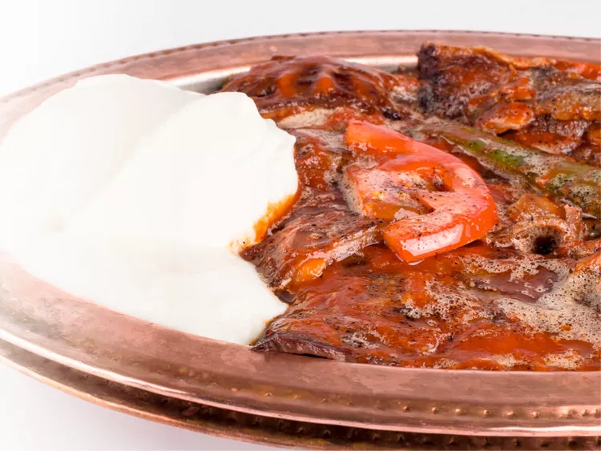

Home
Iskender Kebab

Description
İskender Kebab is a traditional Turkish dish which includes thinly sliced
lamb, pita bread, tomato sauce, and yogurt. It is commonly eaten for lunch
or dinner and is served with rice.
Ingredients
- 1 lb lamb, thinly sliced
- 1 pita bread
- 1 cup tomato sauce
- 1 cup yogurt
- 1/4 cup butter
- 1/4 cup olive oil
- 1/4 cup parsley
- 1/4 cup sumac
- 1/4 cup red pepper flakes
- 1/4 cup salt
Steps
- Grill the lamb slices until cooked.
- Toast the pita bread.
- Layer the pita bread, lamb slices, tomato sauce, and yogurt.
- Melt the butter and olive oil together.
- Pour the butter and olive oil mixture over the dish.
- Sprinkle parsley, sumac, red pepper flakes, and salt on top.